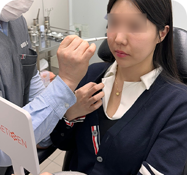
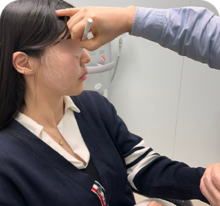
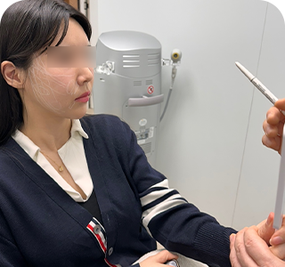
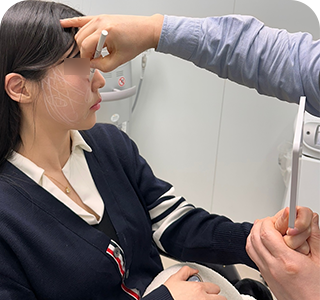
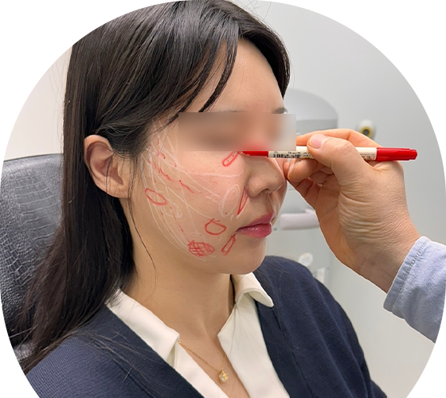

LINE
Scan to add Tune Clinic on LINE

ก่อนเลือกเครื่องมือหรือหัตถการฉีด เราจะประเมินโครงสร้างของคุณและออกแบบแผนเฉพาะบุคคล
แพ็กเกจคือผลลัพธ์ของกระบวนการออกแบบ ไม่ใช่แม่แบบสำเร็จรูป
หน้าที่ของเราคือลดความไม่แน่นอน และออกแบบเส้นทางการรักษาที่สมเหตุสมผลที่สุดสำหรับใบหน้าและแผนการเดินทางของคุณ
ทุกหัตถการเริ่มต้นจากการทำ mapping บนผิวจริงอย่างละเอียดโดยแพทย์
ประเมินสภาพผิว เนื้อเยื่อ และแรงตึงของใบหน้าในภาวะพักก่อนเริ่มวางตำแหน่งใด ๆ

ใช้กระจกและการสื่อสารร่วมกับคุณเพื่อทำให้เป้าหมายด้านความงามสอดคล้องกับข้อเท็จจริงทางกายวิภาค

ระบุเส้นทางการยกหลักและทิศทางสำคัญของความหย่อนคล้อย

สรุปแบบแปลนขั้นแรกเพื่อกำหนดโซนที่ต้องใช้พลังงานลึกหรือการเสริมเฉพาะจุด

แยกวิเคราะห์จุดรอง เช่น พื้นที่สูญเสียปริมาตรเฉพาะจุด หรือบริเวณผิวบางที่ต้องดูแลเป็นพิเศษ

ใช้มาร์กเกอร์ทางคลินิกขั้นสุดท้ายเพื่อกำหนดความลึกที่เหมาะสมและหลีกเลี่ยงโซนอันตรายทางกายวิภาคอย่างเคร่งครัด
เปลี่ยนปรัชญาการออกแบบของเราให้เป็นประโยชน์ที่จับต้องได้สำหรับผู้เดินทาง
การกำหนดจุดตามกายวิภาคอย่างแม่นยำทำให้ทุกขั้นตอนมีเหตุผลทางการแพทย์รองรับ
ระยะพักฟื้นถูกคำนวณไว้ในแผนเพื่อไม่ให้กระทบกำหนดการเดินทางของคุณ
เราแนะนำเฉพาะสิ่งที่สรีรวิทยาของคุณต้องการจริง ๆ เพื่อไปถึงผลลัพธ์ที่ต้องการ
เราตรวจสอบความแท้ของอุปกรณ์หรือวัสดุสิ้นเปลืองที่เกี่ยวข้องต่อหน้าคุณ และสามารถสแกน QR เพื่อตรวจสอบได้
เราปรับระดับพลังงานและจำนวนช็อตให้เหมาะกับกายวิภาคของคุณโดยเฉพาะ
ตั้งแต่ยาชาจนถึง targeted block และ IV sedation ทุกอย่างถูกออกแบบเพื่อความสบายของคุณ
จากแนวคิดการออกแบบที่เข้มงวดนี้ เราจึงมี 4 โปรแกรมหลักที่แพทย์ปรับอย่างเหมาะสมสำหรับแต่ละเคส เพื่อเป็นพื้นฐานของเส้นทางการรักษาของคุณ
LINE
Scan to add Tune Clinic on LINE
Scan to add Tune Clinic on WeChat